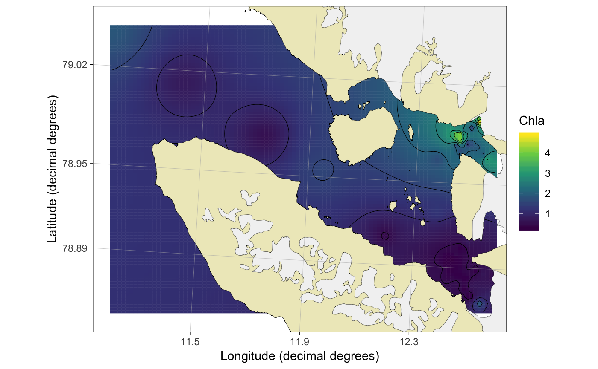

R/interpolate_spatial.R
interpolate_spatial.RdInterpolates a x-y surface from a data frame of spatial observations for plotting. Currently uses the idw function.
interpolate_spatial(df, value, Subset = NULL, coords = c("lon.utm", "lat.utm"), station.col = "Station", strata.col = "From", name.col = NULL, id.cols = NULL, bin.method = "average", int.method = "idw", unit = NULL, shear = NULL, n.tile = 100, accuracy = 100)
| df | data frame containing required information |
|---|---|
| value | Character referring to the name of the value column to be used for interpolation. |
| Subset | A subset argument as a character (i.e. with " ". See Examples). |
| coords | A vector of column names for x (longitude) and y (latitude) coordinates, respectively. It is recommended to use UTM coordinates instead of decimal degrees. See |
| station.col | Character. Name of the column that specifies unique stations (i.e. spatial points). Required. |
| strata.col | Character. Column that specify the sampling depth. |
| name.col | Character. Column giving sample names. Not required. |
| id.cols | Character vector. Identification columns that should be preserved together with value, From, To and UTM coordinate columns |
| bin.method | Character giving the method for binning data, if there are several observations for each spatial point. Alternatives:
|
| int.method | Character giving the method for interpolation. Currently only one option is implemented: "idw", inverse distance weighted interpolation using the |
| unit | The unit for |
| shear | Map tilting. Either NULL for non-tilted maps or a shear matrix, f.ex (matrix(c(2,1.2,0,1),2,2)) to shear the interpolation. This feature works poorly. |
| n.tile | Number of horizontal and vertical tiles. Default is 100 resulting to 10000 tiles. |
| accuracy | Number to which the extent of the interpolation area should be rounded. Given in meters. |
Returns a spatInt object which is a list
The function removes missing values (NAs) from value column.
A word of warning about bin.method = "integrate": this functionality works only if samples have been taken consistently at same depths. In other cases, it is recommended to use bin.method = "average", although the user should be careful in comparing samples taken from different depths in general. The unit for integrated value is [amount]/m2, if the original value was [amount]/m3.
plot.spatInt for plotting; interpolate_section for
data(chlorophyll) ## load an example dataset x <- interpolate_spatial(chlorophyll, Subset = "From <= 10", value = "Chla") ## Interpolate#> [inverse distance weighted interpolation]